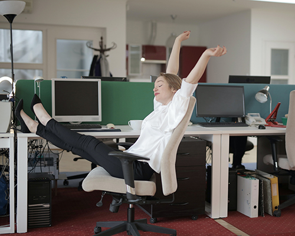
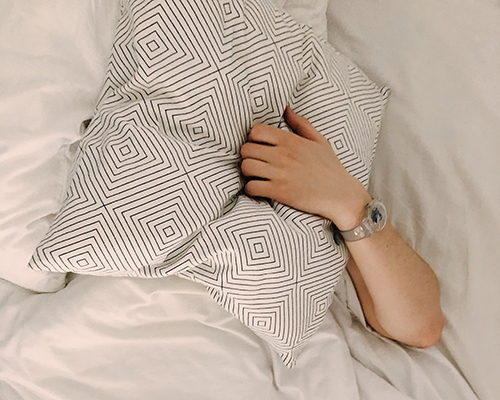

The rest: how not to turn into a "Driven Horse"
To have a good rest, you need to work hard on it
E. Allison
Many people associate the word “time management” with dull gray everyday life, full of work, stress and problems. How can you work by writing everything in a notebook, counting every minute and following the schedule. What about free time? Personal space? Rest in the end? This is a common misconception! In fact, the theory of time management pays great attention to the correct and effective organization of recreation. Because no one is eternal, everyone's batteries run out, and the resources of the nervous system are not unlimited. You have already read about the dangers of Karosi syndrome in previous issues. Therefore, in order to work efficiently and efficiently, you need to be able to rest well.
So what should be an effective rest?
The science of time management is not so much about the amount of time as about its quality. You can spend fewer hours of work and do much more work. In the same way, the quality of your vacation depends not on how many hours you spent on it, but on what the vacation was like. I will offer a number of tips that I hope will help you make your vacation truly effective.
-
Rhythmic rest: regular intervals during the working day
It usually develops spontaneously. I was distracted for a few minutes by comments in social networks, an acquaintance called - I chatted with him, drank a cup of coffee, a colleague from another department came in to discuss the latest news. Such non-systemic rest is fraught with two extremes: the opportunity to rest may never be presented, and the accumulated fatigue will reduce your efficiency. Or, on the contrary, such breaks will occupy you completely and uncontrollably, which will ultimately lead to an increase in time spent.
It's simple: use a small scheduled rest at strictly defined intervals. Remember school and university: one lesson - 45 minutes, the "couple" — 1.5 hours. Break for 10 minutes. These figures are not taken from the ceiling. Teachers, doctors and psychologists recommend resting every hour and a half for 10-15 minutes. Business trainers adhere to these same recommendations when conducting classroom sessions.
No matter how busy your working day is, no matter what rush reigns in the office - find these 10 minutes every 1.5 hours, work without them is extremely ineffective.
-
"Maximum switching" at rest
Vladimir Mayakovsky, who was one of the ideologists and popularizers of the Soviet movement in the scientific organization of labor, expressed the principle of maximum switching in a simple slogan:
“Comrade, remember a simple rule:
Vladimir Mayakovsky More quotes from the author
Work - while sitting, Rest - while standing”!If you spend the whole day in an armchair and in the 10-15 minutes allotted for rest you still sit at the same computer and play solitaire or read information from the site, you practically do not rest.
On the Internet, we have collected five rules available to everyone for every day that improve the quality of life of an office employee and make his work productive:
- In the morning, exercise for 20-30 minutes. Even a simple exercise tones up the muscles of the body and awakens the nervous system, gives a powerful boost of vivacity for the whole day.
- If the office is close, do not get to it by transport, but walk. Hiking improves circulation and also helps burn calories.
- If the office is on a high floor, do not take the elevator, but go upstairs at least a few flights. This is a great opportunity to train your heart and lungs :).
- Do not while away your lunch time in the cafeteria, but walk the streets. A change in setting and environment helps to shift the point of attention and leads to new solutions.
- It is helpful to do some quiet exercise before bed. The body has time to relax and get tired, so that falling asleep will pass easily. Simple movements help relieve fatigue from the spine and muscles of the body. It is optimal to carry them out an hour before bedtime.
-
Give yourself the moral right to rest during the day
If you are really lazy, then 100%, without trying to do something else at this time, think, solve problems, etc. Make a conscious decision:
I want to be lazy - and I will do it
.
Without hesitation and remorse. A common mistake is to think about rest during work and about work during rest. In such a situation, you will not be able to work normally or to rest normally, and the growing sense of guilt will only exacerbate the situation.This often leads to second-order laziness, when instead of preparing an important report, you start doing more pleasant work nonsense: sorting through folders, tidying up boxes, gathering information on the network on issues that are not important and urgent. Such self-deception, i.e. I cannot say that I am not working, but this does not bring me closer to my goals.
-
Effective sleep
Are you getting up hard in the morning? Falling asleep on the go? You're not alone! Sleep is an essential tool for relaxation and recovery. But do we always organize it competently? The good news is that even without increasing the amount of time spent sleeping, you can significantly improve the quality of sleep. Fixed time of going to bed and waking up. Remember when we talked about habits? If you develop a habit, everything becomes easier. Including falling asleep and waking up. “Habits are like superpower. They can give us additional power and help in a variety of matters. " Do the following:
- Ventilate the area you sleep in and try not to eat a few hours before bed. If the stomach continues to work while the rest of the body is resting, rest will be inadequate.
- Establish a calm bedtime ritual. For example, in the last half hour or an hour before bedtime - quiet reading, a walk, music, light gymnastic exercises, etc. The activity can be anything you like, the main thing is that it helps you to relieve your brain from daily worries, switch to a slower rhythm.
- Our sleep consists of several cycles of alternating "fast" and "slow" sleep. The duration of one cycle is slightly different for different people, but on average it is 1 hour 30 minutes. So, if the sleep time is a multiple of the cycle duration, awakening will be easy. For myself, I have long established that 7.5 hours of sleep is much better than 8.
-
Biorhythms are serious
Your performance during the day has two rises and two declines (the first rise is higher for the "larks", the second for the "owls", which occurs in the evening). It is easy to see that one of the recessions occurs just in the afternoon.
Latin Americans generally do not consider it necessary to work at this time and arrange a 3-hour siesta - a mandatory nap in the afternoon heat. We cannot afford such a luxury, but a small 15-minute afternoon nap will pay off with a much higher afternoon performance. Remember how the main character of "17 Moments of Spring" recovers in a car at the end of the series. Long sleep knocks out of the working rut, and in 15 minutes the brain is well refreshed, but does not have time to fall asleep too much. The practice of afternoon naps has long become the norm in Western companies, and following Google, Apple and AliExpress, Russian Sberbank, Yandex, Avito and RusHydro have already opened special sleeping rooms for employees in their offices. Try taking a nap for 15 minutes in your car or at your desk - the next 4 hours of your day will be very productive.